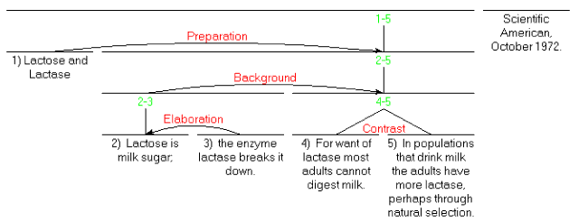

|
+ The RST site + Introduction to RST + Definitions |
History RST was originally developed as part of studies of computer-based text generation. A team at Information Sciences Institute (part of University of Southern California) was working on computer-based authoring. In about 1983, part of the team (Bill Mann, Sandy Thompson and Christian Matthiessen) noted that there was no available theory of discourse structure or function that provided enough detail to guide programming any sort of author. Responding to this lack, RST was developed out of studies of edited or carefully prepared text from a wide variety of sources. It now has a status in linguistics that is independent of its computational uses. Texts, Coherence and Structure In ordinary usage, a text has a kind of unity that arbitrary collections of sentences or other language generally lack. RST offers an explanation of the coherence of texts. But what is coherence? One formulation of coherence is that it is the absence of non-sequiturs and gaps. That is, for every part of a coherent text, there is some function, some plausible reason for its presence, evident to readers, and furthermore, there is no sense that some parts are somehow missing. RST focuses on the first part -- an evident role for every part. Structures Nucleus::Satellite Relations The most frequent structural pattern is that two spans of text (virtually always adjacent, but exceptions can be found) are related such that one of them has a specific role relative to the other. A paradigm case is a claim followed by evidence for the claim. RST posits an "Evidence" relation between the two spans. It also says that the claim is more essential to the text than the particular evidence, and this essentiality is represented by calling the claim span a nucleus and the evidence span a satellite. The order of spans is not constrained, but there are more likely and less likely orders for all of the relations. Other comparable sorts of pairs have also been identified:
If a relation does not have a particular span of text which is more central to the author’s purposes, it is called Multinuclear. An example is the neutral Contrast relation.
Lactose Example With just those relations, we can illustrate the analysis of a text. Here are a title and abstract from the beginning of a Scientific American article. The abstract has been broken into numbered units for analysis.  What is Analysis? The analysis process is intended to give a structured, definite way for a person who understands the text to state a part of what that understanding includes. The analyst (generally called the observer in RST papers) is saying that in his or her own view, the first two units (those that explain the terms lactose and lactase) are intended to facilitate understanding of the rest of the text. Also, that unit 2) is providing additional detail about the subject matter (or more generally, the situation) presented in unit 1). Also, that units 3) and 4) are in a neutral contrast relation. Each of these observations is formulated in terms of author’s intention, so that, for example, the author intended that the reader recognize that the situations expressed in 3) and 4) are similar in many ways, but are different in a way that the author wanted to express. There is nothing in RST which would force the observer to find some structural role for every element of the text. Even so, for carefully written texts, virtually every text has an RST analysis that provides a structural place for every element of the text. (Sometimes because of text complexity or ambiguity, the observer may provide more than one analysis.) More Relations A set of relations is informally presented below. Full relation definitions and examples are available from the definitions page. The set of relations is in principle open, but the set above, defined in Mann & Thompson 1988 (which is currently the definitive paper on RST) has proven effective for many purposes. In the definitions page a distinction is made between Subject-Matter relations and Presentational relations. Subject-Matter relations express parts of the subject matter of the text. The Presentational relations facilitate the presentation process. If you are viewing this on the RST web site, you might want to look at some other examples of RST analysis. On the list of unpublished analyses, look at one marked "Sparky Lived!". On the list of published analyses, look for one marked "It's not laziness". This introductory paper relies on the other examples on the web site, as well as the bibliographies.
Multinuclear Relations In addition to this most frequent pattern of nucleus and satellite, there are relations that do not carry a definite selection of one nucleus. We saw an example, Contrast, above. These are called multinuclear relations. They are:
Observers and Definitions RST is designed to enable the analysis of texts. There is a graphical convention for expressing the structures of texts, but the particular claims made by the analyst can be made explicit based on the definitions of the relations and other structures of RST. Analysts are free to extend the set of definitions where a prior set is inadequate. What does an analysis do? It is a symbolic medium in which a trained reader can account for: the sense of unity, connectedness and coherence of ordinary written monologues, in such a way that the analysis consists of explicit claims. Each relation has a definition. The definition specifies what a reader of a text must judge to be true in order to include that relation between two spans in an analysis of that text. A typical relation definition is the following, in an abbreviated form, for the "Condition" relation. It illustrates both the specific definition and also the general form of all of the definitions. It is intended to be applied in a systematic way by a person, called an observer in RST.
Since the effect is never empty, every observation of a relation ascribes an intention to the author concerning the spans of text that are linked by the relation. Projecting this to an analysis that provides a role for every span, this ascribes an intention, a reason for the presence of every element of the text. An observer examines the text and finds consistent combinations of spans and relations (and other structures) that encompass the entire text. A text may have more than one analysis, either because the observer finds ambiguity or finds that a combination of analyses best represents the author’s intent. Such a combination will often not form a tree, but the combinations themselves are fairly rare. The "abbreviation" referred to above is intended to clarify the epistemological status of observations. For each of the Observer’s Findings above, the observer is stating that "It is plausible to the observer that it was plausible to the author writing the text that <the finding> holds. The primary influence on the organization and level of detail of the definitions was to make the observation process always performable. Darwin Analysis Example with Claims Here is an analysis example. It is an abstract from an article in Scientific American, May 1986, entitled "Darwin as a Geologist". For analysis it has been predivided into five units on syntactic grounds, including the title as a unit. 1) Darwin as a Geologist 2) He tends to be viewed now as a biologist, 3) but in his five years on the Beagle his main work was geology, 4) and he saw himself as a geologist. 5) His work contributed significantly to the field. The RST diagram is as follows:
Claims of the Observer: The table below shows the claims made by the observer in positing the first Evidence relation in the Darwin example:
These claims, together with those for the other two Evidence relations and the Concession relation, are a set of 16 or so claims. They are essentially equivalent to the diagram. The possibility of enumerating the specific claims of the analysis is what makes RST analyses comparable to other approaches, provided of course that the others are sufficiently explicit. Implicit Communication based on Rhetorical Relations Aside from the explicitness of the task, the observer is in a position not very different from that of the reader of the text. The relations that the observer finds plausible will generally be plausible to the reader as well. The relations, as well as the clauses of the text, carry communicative content. For example, consider the idea that because Darwin contributed significantly to geology, that is evidence that Darwin worked as a geologist. The notion of evidence is nowhere explicit in the example text, but it is conveyed nevertheless. If the text is changed so that it somehow denies the idea that this contribution is evidence for such working, then it becomes incoherent, but not contradictory. The evidence idea, implicitly conveyed, is part of what the text communicates. In various papers on RST, primarily from 1985 to 1992, these were called relational propositions. This implicit communication contributes significantly to the possibility of "reading between the lines," of finding that, routinely, implicit communication arises by reading texts. Summary Because RST generally provides an analysis for any coherent carefully written text, and because such an analysis provides a motivated account of why each element of the text has been included by the author, it gives an account of textual coherence that is independent of the lexical and grammatical forms of the text. Because of its specification of the role of the observer, it provides a basis for statements about the objectivity and subjectivity of the analysis. It also provides a functional basis for studying the discourse-relevant specific forms in texts, "discourse markers" and other formal correlates of discourse structure. Where RST posits structure within sentences, it provides a basis for studying the functions of various forms of clause combining, and more generally the relationships between these sorts of discourse structure and various cohesive devices. Reference Mann, W.C., & Thompson, S.A. 1988. Rhetorical Structure Theory: Toward a functional theory of text organization. Text, 8 (3). 243-281.
|
||||||||||||||||||||||||||||||||||||||||||||||||||||||||||||||||||||||||||||||||||||||||||||||||||||||||||||||||||||||||||||||||||||||||||||||
©2005-2025 William C. Mann, Maite Taboada. All rights reserved. |
|||||||||||||||||||||||||||||||||||||||||||||||||||||||||||||||||||||||||||||||||||||||||||||||||||||||||||||||||||||||||||||||||||||||||||||||